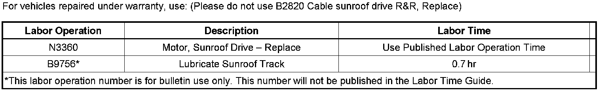

Body - Sunroof Noises/Reverses When Closing
TECHNICALBulletin No.: 06-08-67-011G
Date: September 22, 2008
Subject:
Ultraview Sunroof Reverses During Auto Close Operation, Shudder, Squeak/Moan Noise (Clean / Lubricate Tracks / Replace Shoes)
Models:
2004-2009 Cadillac SRX
Supercede:
This bulletin is being revised to add a statement in procedure 3 and a part number for the white rear guide shoe. Please discard Corporate Bulletin Number 06-08-67-011F (Section 08 - Body and Accessories).
Condition
Some customers may comment that the Ultraview Sunroof reverses direction when auto closing. This may be accompanied by a squeak or moan noise or a shuddering condition while the sunroof is moving.
Cause
This condition may be caused by high friction forces due to a lack of lubrication or dirt/grime inside the rear tracks for the front sunroof. A binding front drive cable or track may also cause this condition.
Correction
Clean and lubricate the tracks following the procedure below.
Tip
The rear track cleaning and sunroof motor initialization and teach module processes can be viewed on the GM Training website under Service Know-How/TECHAssists (U.S. dealers). The TECHAssist course number is 50250.23T1.
1. Remove the moveable sunroof glass panel.
1. Open the sunroof until the air deflector is in the full upright position.
2. Carefully remove the front and rear sunroof-to-lift arm fasteners.
3. With the help of an assistant, lift and remove the sunroof glass panel.
Important:
Once the front sunroof glass panel is removed, operate the sunroof motor to open and close the front drive system. Listen for chattering or noisy front drive cables. If a condition is noted, replace the front track assembly and drive cable that is causing the noise. It may not be necessary to replace both sides. Once the front drive system operates freely, move to the rear track system.
2. Remove the front cam extensions for the rear tracks. You can now remove the rear track guides. Clean the white plastic guide shoes with brake clean. You may notice small scratches in the plastic shoes this is normal and it's not necessary to replace the guide arms.
3. Remove the four white plastic guide shoes from the rear track guides. Once the shoes are removed, install the softer durometer rubber guide caps, P/N 25880591, in place of the original ones. Once all for rubber caps are installed, reinstall the white plastic guide shoes over the caps. The shoes must be reinstalled to reduce friction forces.
Important:
If cracks are found in the plastic guide shoes, replaces all four shoes, P/N 25979460.
4. Once the rear track guides are removed, place a clean shop towel where the guide was removed from the track. Using shop air pressure, start at the rear of the track and blow out the tracks moving back to front. Once air has been used to clean the track, obtain a steel rod (a used antenna mast works as well) and wrap with a shop towel/paper towel soaked with brake clean. Move the rod or mast with the towel through both rear tracks. Continue until all debris and grease is removed.
5. The towel should be clean after running it through the tracks. After the tracks are clean, lubricate both rear tracks and guides with RHEOSIL 500F. Make sure you slide the rear guides back and forth through the tracks several times to evenly spread the lubricant throughout the rear track system. Use a small acid brush to coat the grease throughout the complete rear track assembly.
Tip
RHEOSIL 500F is not currently available from GMSPO. You can obtain the product by calling TAI Lubricants at 302-326-0200. We recommend purchasing the 17.64 oz jar, which has enough grease to repair approximately 16 vehicles. The price of the product is $69.95 (USD) and TAI will accept Visa and MasterCard.
6. Reinstall the rear sunroof track guides and cam extensions. Make sure to apply Threadlocker medium strength, P/N 12345382 (in Canada, use 10953489), to the guide fasteners.
Notice:
Over-tightening any of the sunroof fasteners may damage the sunroof system. The front sunroof glass fasteners go into an aluminum boss and they can be stripped-out if overtightened. The stripped condition should not be covered under warranty as it was likely caused by overtightening or cross-threading.
7. Reinstall the sunroof glass. Align and install the front and rear glass fasteners.
Tighten
Tighten the front and rear glass fasteners to 5 Nm (44 lb in).
8. To complete the track cleaning procedure, the initialization and teach processes must be completed. Please note that the teach process must be performed immediately following the initialization process. If the teach process is not begun within three seconds of completing the initialization process, the entire procedure will have to be repeated.
9. If you still have a concern after properly cleaning the tracks, replace the front sunroof motor. "The revised sunroof motor was implemented during the start of the 2007 model year. It may not be necessary to replace the motor for 2007 and 2008 models if it has 13 06 stamped on the sticker attached to the motor."
Initialization/Teach Module Process
Important:
Perform the Teach Module Process immediately after completing the Initialization Process. Failure to begin the Teach Module Process within 3 seconds of completing the Initialization Process will require the entire procedure to be repeated.
1. Make sure the engine is idling and the vehicle is in Park.
2. Press and hold the Sunroof Open Switch and the Sunshade Close Switch together for six seconds.
3. Release both buttons.
4. Press the Sunshade Close Switch until the motor stalls in the close position.
5. Press the Sunroof Close Switch until the motor stalls in the close position.
6. Run the Initialization Process above and within three seconds perform Step 7 below.
7. Press the Sunroof Close Switch three times and hold the switch down on the third switch press.
8. Continue holding the Sunroof Close Switch until the sunroof and sunshade have stopped moving.*
*The sunroof has entered the teach mode at this point and the following operations will be observed:
^ The sunroof and sunshade will move to the full open position. After the sunroof reaches the full open position, the sunroof will begin to close.
^ When the sunroof reaches the closed position, the front sunshade will then close.
^ The Teach Module Process is complete when both panels have stopped moving.

Parts Information

Warranty Information

Disclaimer